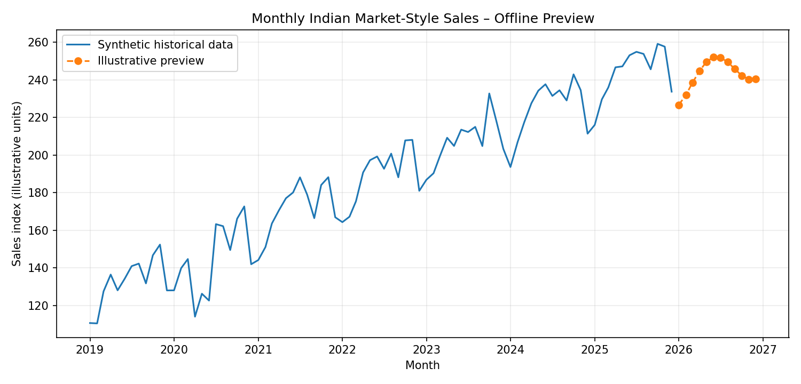

Prophet Forecasting on Indian Market Data
Data Analyst Intern 3M · Week 10 Day 2
Data and result disclaimer: Offline demonstration preview. The dataset is synthetic and designed to resemble monthly retail-market patterns in India. The forecast line is illustrative; Prophet was not fitted to generate this preview.
Project objective
Demonstrate time-series forecasting with Prophet, including trend, annual seasonality, chronological holdout evaluation, and a 12-month forecast workflow.
Historical pattern and preview

Dataset overview
84 observations
Monthly records
Jan 2019–Dec 2025
Coverage period
12 months
Planned forecast horizon
Workflow
- Load and validate monthly date/value columns.
- Explore trend, yearly seasonality, and festive-period effects.
- Reserve the last 12 months for chronological holdout testing.
- Fit Prophet with yearly seasonality.
- Evaluate using MAE and RMSE.
- Refit on all observations and forecast the next 12 months.
Run the actual Prophet workflow
See the project README and execution_notes.txt. The Python script generates evaluation metrics, forecast CSV, and Prophet plots after dependencies are installed.
Forecasts on real financial or commercial data require verified data and careful validation. This demonstration is not investment advice.